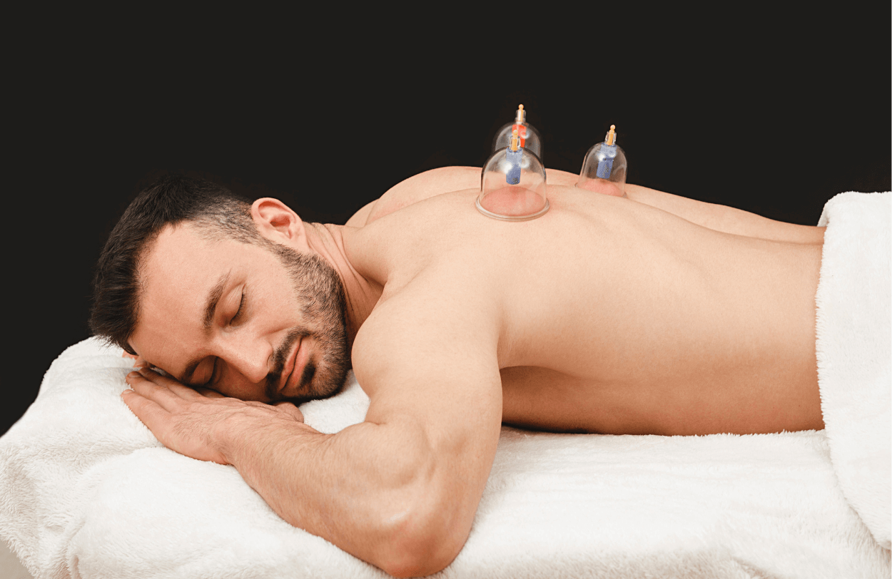
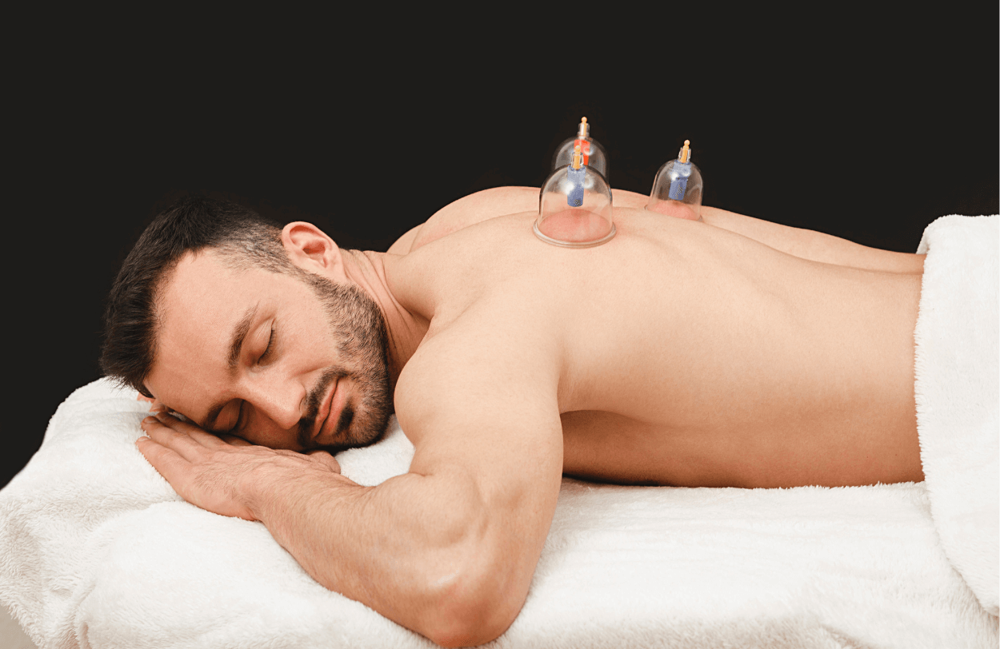

Bankovanie
Bankovanie, známe aj ako cupping therapy, je starodávna liečebná technika, ktorá sa používa už tisíce rokov na zmiernenie bolesti, podporu krvného obehu a detoxikáciu organizmu. Táto metóda zahŕňa použitie sklenených, plastových alebo silikónových bank, ktoré sa priložia na pokožku, vytvorí sa v nich vákuum a tým sa pokožka mierne vtiahne do banky. Tento proces má množstvo zdravotných benefitov, vrátane úľavy od svalového napätia a zlepšenia celkovej pohody. Priaznivo ovplyvňuje kožu, podkožie, svaly, šľachy, cievny systém a centrálny nervový systém. Vďaka efektu vákua a tepla sa tkanivá prekrvujú, čím sa vyživujú, uvoľňujú a regenerujú. Po bankovaní sa neodporúča cvičiť, ísť do sauny či vodného sveta a vykonávať akúkoľvek športovú činnosť. Vhodné je relaxovať a dopĺňať tekutiny. Bankovanie sa odporúča najmä na jeseň a jar. V jeseni keď začína byť veterno a chladno bankovaním povzbudíme imunitný systém, prehrejeme telo a zbavíme sa vetra. Zabránime tak vzniku akútnym "seknutiam", podchladeniu a chrípke. Jar zase so sebou prináša novú energiu. Organizmus treba zobudiť a motivovať.
Pre koho je bankovanie vhodné?
Bankovanie môže byť prospešné pre rôzne skupiny ľudí, najmä pre tých, ktorí hľadajú alternatívne metódy na riešenie zdravotných problémov alebo podporu celkového zdravia. Najčastejšie sa odporúča pre:
- Osoby s chronickými bolesťami: Bankovanie môže pomôcť zmierniť bolesť chrbta, krku a ramien, čo je častý problém u ľudí so sedavým zamestnaním alebo nesprávnym držaním tela.
- Športovcov: Táto metóda je obľúbená medzi športovcami, ktorí ju využívajú na urýchlenie regenerácie svalov a zlepšenie výkonnosti.
- Osoby s dýchacími problémami: Bankovanie môže pomôcť pri problémoch s dýchaním, ako sú astma alebo bronchitída, tým, že uvoľňuje dýchacie cesty.
- Ľudí s vysokým stresom: Bankovanie môže byť účinné aj pri znižovaní stresu a úzkosti, pretože podporuje uvoľnenie a zlepšuje prúdenie energie v tele.
- Tých, ktorí hľadajú detoxikáciu: Bankovanie môže podporiť lymfatický systém a pomôcť telu zbaviť sa toxínov, čo vedie k celkovej očiste organizmu.
 

Pre koho nie je bankovanie vhodné?
Hoci bankovanie prináša množstvo výhod, existujú situácie, kedy by ste sa tejto terapii mali vyhnúť:
- Tehotenstvo: Tehotné ženy by sa mali vyhnúť bankovaniu, najmä v oblasti brucha a spodnej časti chrbta, aby sa predišlo možným komplikáciám.
- Kardiovaskulárne ochorenia: Osoby s vážnymi srdcovými problémami alebo vysokým krvným tlakom by mali konzultovať bankovanie s lekárom.
- Kožné problémy: Ak máte citlivú pokožku, ekzém, otvorené rany alebo iné kožné ochorenia, bankovanie môže tieto stavy zhoršiť.
- Závažné ochorenia: Ľudia s vážnymi zdravotnými problémami, ako sú krvácavé stavy alebo nádorové ochorenia, by sa mali vyhnúť bankovaniu alebo ho vykonávať len pod dohľadom odborníka.
Bankovanie je tradičná terapia s mnohými benefitmi, ktorá môže pomôcť zmierniť bolesť, podporiť krvný obeh a zlepšiť celkovú pohodu. Je vhodná pre športovcov, osoby s chronickými bolesťami a tých, ktorí hľadajú alternatívne metódy na zlepšenie zdravia. Predtým, než sa pre bankovanie rozhodnete, je dôležité zvážiť svoje zdravotné podmienky a prípadne sa poradiť s odborníkom, aby ste sa uistili, že je pre vás táto terapia bezpečná a efektívna.